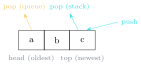

Example
public class Stack {
protected int[] data;
protected int size = 0;
public Stack() { this(10); }
public Stack(int capacity) { data = new int[capacity]; }
// deep copy
public Stack(Stack other) { data = other.data.clone(); size = other.size; }
public void push(int x) {
if (size == data.length)
data = java.util.Arrays.copyOf(data, 2 * data.length);
data[size++] = x;
}
public int pop() {
if (size == 0) throw new IllegalStateException("empty stack");
return data[--size];
}
public boolean isEmpty() { return size == 0; }
}
public class Queue extends Stack { // reuse of push, isEmpty and the storage
private int head = 0;
@Override public int pop() {
if (head == size) throw new IllegalStateException("empty queue");
return data[head++];
}
@Override public boolean isEmpty() { return head == size; }
}Picture

The stack takes from the top; the queue from the head, where the oldest element is.
The C++ version
The same class in C++ owns its array through a pointer, so it needs a destructor (delete[] data), a copy constructor and an assignment operator that copy the array: the rule of three. In Java, clone() on the array plays the role of the deep copy and the garbage collector of the destructor.
Intuition
Two ten-line classes contain most of object orientation: hidden representation, invariants, construction, copying, reuse by extension.
Pitfall
The queue never reclaims the slots before head, and a Queue passed where a Stack is expected changes the meaning of pop: inheritance used for code reuse, not for an is-a relation (see Liskov). Composition (a queue that contains an array or a list) is the better design.